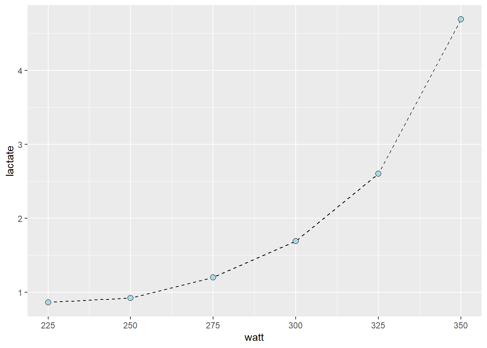

Fullverdig rapport arbeidskrav 2
Del 1: Laktatprofil
Vi valgte å bruke cyclingstudy datasettet med tanke på at vi ikke testet laktatprofiler under reliabilitets-prosjektet vårt. Dette datasettet inneholder data fra 21 forsøkspersoner, der de fleste har gjennomført en laktatprofil på fire ulike tidspunkt: pre, meso1, meso2 og meso3.
Vi har vist hvordan vi har funnet ut laktatprofilen, og laktatterskelen til forsøksperson 10 ved å tilføre en tredjegrads polynomial regresjonsmodell som predikerer laktat ut ifra watt for å fange opp laktatkurven.
Videre har vi regnet ut effektutvikling (watt) ved blodlaktatverdiene 2- og 4 mmol L\(^{-1}\) med metoden “inverse prediction” til de ni utvalgte forsøkspersonene.
Laktatprofil til forsøksperson 10 “pre-test”:
Laktatterskel “pre-test”

“Pre-test”: Watt ved 2- og 4 mmol L\(^{-1}\)
På “pre-test” sykler forsøkspersonen på 307 W ved en laktatverdi på 2 mmol L\(^{-1}\), og på 343 W ved en laktatverdi på 4 mmol L\(^{-1}\).
Laktatprofil ved “meso3”
Laktatterskel “meso3”
“Meso3”: Watt ved 2- og 4 mmol L\(^{-1}\)
På “meso3” sykler forsøkspersonen på 310 W ved en laktatverdi på 2 mmol L\(^{-1}\), og på 344 W ved en laktatverdi på 4 mmol L\(^{-1}\).
Laktatverdi forsøkspersoner
Forsøksperson 1: Pre: 212 W = 2mmol og 255 W = 4 mmol. Meso3: 243 W = 2 mmol og 283 W = 4 mmol
Forsøksperson 2: Pre: 217 W = 2 mmol og 260 W = 4 mmol. Meso3: 253 W = 2 mmol og 289 W = 4 mmol
Forsøksperson 3: Pre: 272 W = 2 mmol og 314 W = 4 mmol. Meso3: 310 W = 2 mmol og 353 W = 4 mmol.
Forsøksperson 4: Pre: 220 W = 2 mmol og 266 W = 4 mmol. Meso3: 224 W = 2 mmol og 263 W = 4 mmol
Forsøksperson 5: Pre: 236 W = 2 mmol og 309 W = 4 mmol. Meso3: 236 W = 2 mmol og 309 4 mmol
Forsøksperson 6: Pre: 190 W = 2 mmol og 239 W = 4 mmol. Meso3: 227 W = 2 mmol og 257 W = 4 mmol
Forsøksperson 8: Pre: 242 W = 2 mmol og 274 W = 4 mmol. Meso3: 281 W = 2 mmol og 319 W = 4 mmol
Forsøksperson 9: Pre: 244 W = 2 mmol og 280 W = 4 mmol. Meso3: 253 W = 2 mmol og 291 W = 4 mmol
Reliabilitet
| s | m | mean_diff | te | cv | upr.L | lwr.L |
|---|---|---|---|---|---|---|
| 23.2056 | 290.0556 | 15.66667 | 16.4 | 5.7 | 80.09575 | -48.76242 |
Vi undersøkte også reliabiliteten til laktatveridene 2- og 4 mmol L\(^{-1}\). Den relative typiske feilen var lavest på 2 mmol L\(^{-1}\) med cv = 4.9, kontra 4 mmol L\(^{-1}\) med cv = 5.7.
Del 2: Predicting sizes of DNA fragments, or slopes of a qPCR calibration curve
Innledning - beskrivelse av datasett
Prøvene er hentet fra ferdig ekstrahert cDNA, som kommer fra RNA ifra muskelbiopsier til forsøkspersoner ved en styrketreningstudie ved Høgskolen i Innlandet. W0 er fra en prøve fra en forsøksperson før en treningsperiode, mens W2 har opprinnelse fra prøve tatt etter treningsperioden.
MHC-I, MHC-IIA og MHC-IIX er molekylet brukes til å lese av primerene på de aktuelle genene slik at vi får amplifisert de genene vi ønsker å kopiere. Deretter får vi målt konsentrasjonen av de aktuelle isoformene av mhc-genet. Dette kan i en studie brukes til å sammenligne muskelfibertypeoverganger. Dersom vi hadde hatt data fra flere forsøkspersoner kunne vi eksempelvis undersøkt om de som f.eks. har trent styrketrening har fått fibertypeoverganger fra type IIX til type IIA.
C-myc er en annen primer som vi har brukt for å få amplifisert dette genet fra PS1 og PS2 som begge er prøver med miksede cDNA fra flere personer og ved ulike tidspunkt. Alle disse med c-myc som primer fungerer som kontroller. Dette har vi fortynnet 6 ganger og kjørt 3 replikater av samme fortynning. Det er disse kontrollene vi er interessert i for å sjekke om metoden vår har god validitet. I denne delen av arbeidskravet ønsker vi å regne ut reaksjonseffektiviteten til PCR-reaksjonene ved hjelp av det som fungerer som kontrollgenet, c-myc.
For de kontrollrørene som inneholdt prøve “PS1” så var reaksjonseffektiviteten 71.3 %.
For rørene med PS2 estimerer vi derimot reaksjonseffektiviteten til å være 250.6 %. For å kunne bruke prøvene videre i analyser ved hjelp av delta-delta-ct-metoden for å kunne si om prosentvis endringer i genuttrykk av myosin tungkjede isoformene etter en treningsintervensjon er det viktig at noen antagelser er møtt. En av disse har vi sjekket her ved at det burde være nærme 100 % reaksjonseffektivitet for PCR-reaksjonene, og våre resultater er ikke innenfor 0.9-1.1. I tillegg er det en annen antagelse om at effektiviteten av målgenet er lik kontrollgenet [livak2014]. Samtidig burde de to ulike kontrollene vi gjorde være like.
At vi ikke er nærmere det som er å forvente kan ha flere årsaker. Lite erfaring med pippetering, samt at ulike personer har pippetert kan tenkes å gi en større unøyaktig. Det var ikke samme person som pippeterte kontrollene med PS1 som pippeterte de med PS2. Denne usikkerheten gir heller ikke mulighet for at eventuelle feil i pippetering kan bli systematisk like mye feil på begge prøvene.
Resultatene fra PS1-kontrollene var ikke like langt unna 100 %. Sammenligner vi variasjonen i ct-verdiene kan vi med hvordan ct-verdiene forklare hvorfor estimeringen er lengre unna for PS2.
# A tibble: 6 × 4
target_name avg_ct sd cv
<chr> <dbl> <dbl> <dbl>
1 1-1 27.1 0.293 0.0108
2 2-1 28.3 0.795 0.0281
3 3-1 31.0 NA NA
4 4-1 30.0 0.428 0.0142
5 5-1 31.6 0.408 0.0129
6 6-1 34.3 0.209 0.00607# A tibble: 6 × 4
target_name avg_ct sd cv
<chr> <dbl> <dbl> <dbl>
1 1-2 28.2 NA NA
2 2-2 29.9 0.409 0.0137
3 3-2 24.0 11.4 0.474
4 4-2 30.5 5.59 0.183
5 5-2 31.5 NA NA
6 6-2 29.8 3.84 0.129 Del 3: Intepreting a regression table
Innledning
I denne siste delen av arbeidskravet skal vi bruke datasettet “hypertrophy” som er brukt i to studier [haun_2018 & haun_2019]. Basert på to variabler som vi har valgt skal vi lage en lineær modell og presentere denne i en tabell. Deretter diskuterer vi tabellen med spesielt fokus på p-verdien.
Tverrsnittsarealet til en muskelgruppe er den viktigste faktoren for vår maksimale muskelstyrke (Raastad et al. 2010). I datasettet vi har brukt er det ikke målt tverrsnitt for alle de involverte muskelgruppene i knebøy. Likevel kan vi forvente å se positiv korrelasjon mellom vastus lateralis tykkelse ved t1 (målt med ultralyd, i cm) og maksimal motstand (kg) på 3 repetisjoner (3RM) i knebøy ved samme tidspunkt. Det blir også hypotesen vår, at vi vil se en korrelasjon, der større tykkelse av vastus lateralis gir høyere 3RM i øvelsen knebøy.
Metode
Metoden trener ikke så lang beskrivelse, men vi har laget en lineær modell av de nevnte variablene og deretter en tabell. Basert på dette diskuterer vi resultatene videre i diskusjonsdelen.
Resultater
Nedenfor har vi fått ut en lineær regresjonstabell. Modellen vår viser at for hver enhet (1 cm) økning i tverrsnitt av vastus lateralis så predikerer vi 17.1 kg høyere 3RM i knebøy.
Call:
lm(formula = SQUAT_3RM ~ VL_T1, data = cor_dat)
Residuals:
Min 1Q Median 3Q Max
-36.157 -13.399 2.276 9.528 42.662
Coefficients:
Estimate Std. Error t value Pr(>|t|)
(Intercept) 78.43 19.49 4.025 0.000415 ***
VL_T1 17.11 6.30 2.717 0.011367 *
---
Signif. codes: 0 '***' 0.001 '**' 0.01 '*' 0.05 '.' 0.1 ' ' 1
Residual standard error: 17.54 on 27 degrees of freedom
(2 observations deleted due to missingness)
Multiple R-squared: 0.2147, Adjusted R-squared: 0.1856
F-statistic: 7.38 on 1 and 27 DF, p-value: 0.01137Diskusjon
Estimatet er allerede beskrevet i resultatdelen. Men videre i diskusjonsdelen vil standardfeilen, t-verdien og p-verdien diskuteres kort. Standardfeilen sier oss noe om hvor nøyaktig og pålitelig de estimerte koeffisientene er. T-verdien er tallet som brukes for å teste ut en nullhypotese. Utregningen er etsimert koeffesienten delt på standardavviket. P-verdien forteller oss hvor stor sannsynligheten er for at en observert forskjell mellom datasett skyldes tilfeldigheter. Dersom nullhypotesen er sann, ønsker man en p-verdi på mindre enn 0.05. I datasettet vårt fant vi at p-verdien var 0.01, noe som indikerer at det er stor sannsynlighet for at den observerte forskjellen skyldes tilfeldigheter.
References
Raastad, Truls, Gøran Paulsen, Per E. Refsnes, Bent R. Rønnestad, and Alexander R. Wisnes. 2010. Styrketrening - i Teori Og Praksis. 1st ed. Gyldendal norsk forlag AS.